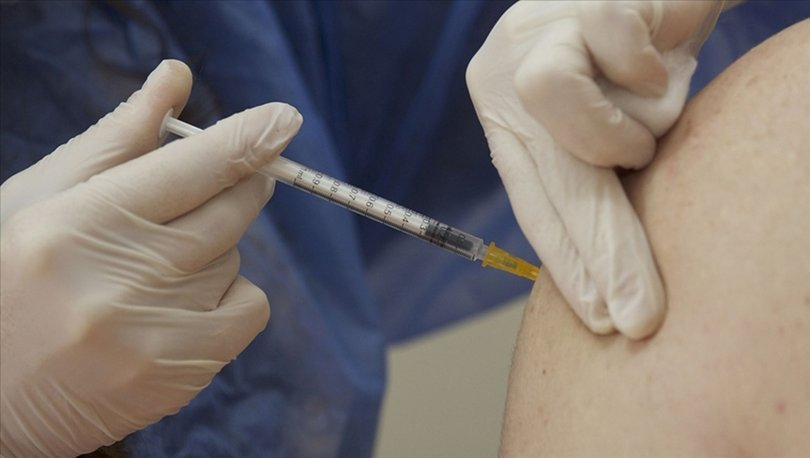

SAĞLIK
Sağlık Bakanlığınca, Kovid-19'la mücadele kapsamında uygulanan toplam aşı miktarı son 24 saatte 500 bin dozu aştı.
Sağlık Bakanlığınca, Kovid-19'la mücadele kapsamında uygulanan toplam aşı miktarı son 24 saatte 500 bin dozu aştı. Son 24 saatte uygulanan birinci ve ikinci doz toplam aşı miktarı 504 bin 890 doz oldu.
Sağlık Bakanlığınca, Kovid-19'la mücadele kapsamında son 24 saatte uygulanan aşı miktarı 504 bin 890 doz oldu.
Sağlık Bakanlığının "covid19asi.saglik.gov.tr" adresinde yer alan anlık verilere göre, 18 Mayıs saat 21.05 itibarıyla uygulanan birinci doz aşı sayısı 15 milyon 310 bin 73'e, ikinci doz aşı miktarı 11 milyon 421 bin 458'e ulaştı.
Son 24 saatte uygulanan aşı miktarı 504 bin 890 doz oldu. Böylece toplam doz miktarı 26 milyon 731 bin 531 olarak gerçekleşti.
Dün aynı saatlerdeki verilere göre, uygulanan birinci doz aşı sayısı 15 milyon 42 bin 41, ikinci doz aşı miktarı 11 milyon 184 bin 600, toplam doz miktarı ise 26 milyon 226 bin 641 olarak kaydedilmişti.